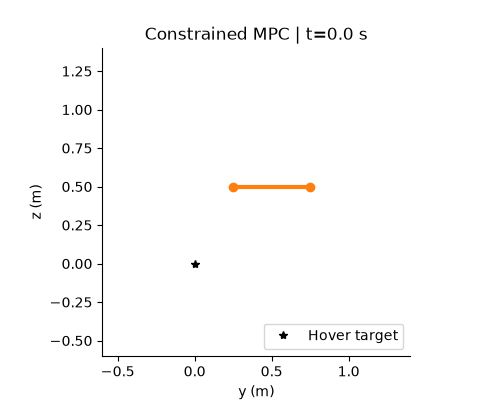
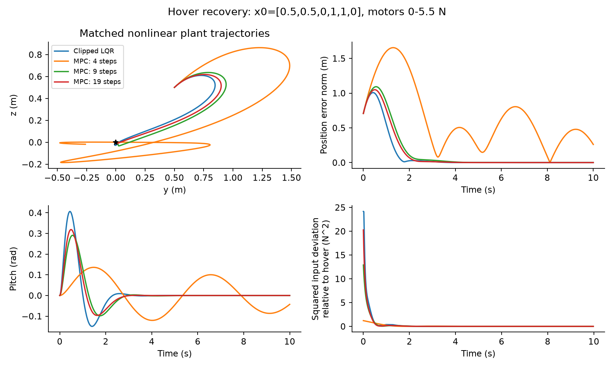
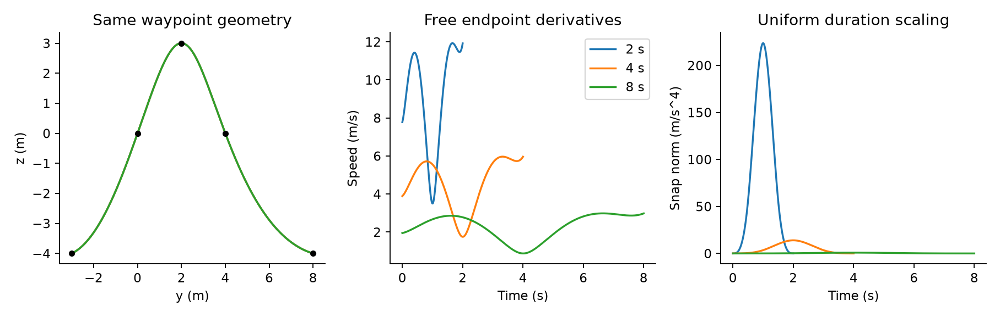
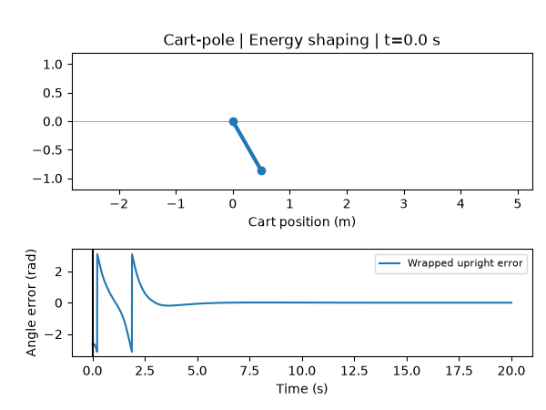
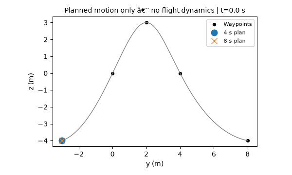

Robotics · Penn MEAM 5170 coursework extension
Robotic Motion Planning
and Optimal Control
Recover a planar quadrotor to hover under motor limits, then explore how trajectory duration changes the smoothness of waypoint plans.
- Python
- NumPy
- SciPy
- OSQP
MPC hover recovery in simulation

Reduced-motion preferences are respected. Pausing shows the starting frame; play to view the original animation.
Two controllers, the same nonlinear plant
Input-constrained linear MPC plans a finite sequence of motor commands with a hover-linearized model and explicit thrust bounds. It applies the first command and replans at the next control update. Clipped LQR uses a continuous-time linear-quadratic feedback gain, then clips its commands to the same motor limits.
Both controllers run on the same nonlinear planar quadrotor, with identical initial conditions, integration, actuator limits and evaluation duration. The comparison examines the behavior of these specified configurations.

| Controller | Position RMSE (m) | Full-state settling (s) | Control effort relative to hover (N² s) |
|---|---|---|---|
| Clipped LQR | 0.2873 | 2.68 | 3.8730 |
| MPC N=5 | 0.7994 | Not settled | 0.8692 |
| MPC N=10 | 0.3501 | 3.26 | 2.4021 |
| MPC N=20 | 0.3257 | 2.62 | 2.8863 |
MPC N=10 uses 38.0% less control effort relative to hover, with 21.9% higher position RMSE and slower settling than clipped LQR in this configuration. This is an error–effort tradeoff, not a universal advantage of MPC.
Control effort is the time integral of squared applied thrust deviation from nominal hover: ∫ ‖u(t) − uhover‖² dt, with uhover = [4.905, 4.905] N. It counts deviations in either direction and does not measure physical energy consumption.
LQR and MPC use different objective and terminal-cost conventions. The settings below make this a matched-plant comparison, not an isolated test of constraint handling.
Controller settings and comparison boundaries
- Plant and rollout: state [y, z, θ, vy, vz, ω], initial state [0.5, 0.5, 0, 1, 1, 0]; mass 1 kg; moment arm 0.25 m; inertia 0.0625 kg m²; gravity 9.81 m/s². Nonlinear RK4 integration at 0.005 s; held control updates every 0.02 s; 10 s total; no disturbance in this displayed trial.
- LQR: continuous infinite-horizon design with Q = diag(10, 10, 1, 1, 1, 1), R = I₂. No finite terminal cost; the CARE solution supplies the feedback gain. Applied commands are clipped to [0, 5.5] N per motor.
- MPC: the same numerical Q and R in an unscaled discrete stage sum, terminal Q, forward-Euler prediction at 0.1 s. N counts states; N=10 has nine input steps and a 0.9 s prediction horizon. Motor bounds are imposed relative to hover.
- Cost convention: multiplying the entire MPC objective by 0.1 leaves its optimizer unchanged and gives a rectangle-rule interpretation with terminal matrix 0.1Q, not Q or the CARE value matrix. These are not equivalent objectives.
- Settling: all six absolute state errors must stay within [0.02, 0.02, 0.02, 0.05, 0.05, 0.05] in their respective SI units through the end of the finite run. Position RMSE is √mean(y² + z²), including the initial sample.
- Verification: metrics were independently recomputed from saved applied-input traces. The unrounded comparison is 37.977996% lower effort and 21.869478% higher position RMSE. Controller settings were not retuned to favor MPC.
Minimum-snap waypoint planning
Plan piecewise-polynomial paths through five planar waypoints while minimizing the integral of squared snap—the squared fourth derivative of position. The solver enforces waypoint interpolation and continuity through the fourth derivative, with free endpoint derivatives.

Doubling total duration from 4 to 8 seconds reduces integrated squared snap by 128×, from 210.6954 to 1.6461. The geometric path is preserved; the objective scales as T−7. Independent numerical integration confirms the objective.
Formulation and numerical checks
Four degree-13 polynomial segments use 14 coefficients per coordinate in normalized local time. Waypoints are (−3, −4), (0, 0), (2, 3), (4, 0), (8, −4). Segment durations are uniformly 0.5, 1 or 2 s.
Row-scaled equality constraints and a nullspace least-squares solve avoid explicitly forming a squared-condition-number monomial Hessian. Per coordinate, the equality matrix has rank 20 over 56 coefficients. The snap operator has a 16-dimensional piecewise-cubic kernel; restricting the constraints to that kernel rules out a feasible zero-snap path for these waypoint timings. No endpoint conditions were added to force a nonzero objective.
Independent adaptive integration gives 210.6953642383607 for the 4 s path. Maximum waypoint residual is 1.12 × 10−14 m; the largest derivative-continuity residual is 6.91 × 10−11 in its corresponding derivative units. Peaks in the figure are sampled, not certified continuous extrema. This is path planning; thrust, tilt and obstacle feasibility are not imposed.
Additional saved demonstrations
Cart-pole: energy shaping to LQR
This 20 s nonlinear simulation starts 30° from downward rest. Energy shaping raises the pole, then switches once to local LQR at 2.79 s. The saved trajectory settles at 9.84 s: cart position and wrapped upright angle stay within 0.05 m and 0.05 rad, and both speeds within 0.1 in SI units, through the remaining run. The cart reaches 4.06 m from the origin, exceeding the ±2 m reference bound during the transient; this does not demonstrate rail-constrained control or global convergence.

Minimum-snap: same geometry, different timing

Optional modules: unicycle and iLQR
Unicycle flatness and iLQR remain secondary coursework modules. Their saved studies are separate tasks and are not evidence of quadrotor hover performance. iLQR optimization and endpoint checks have task-specific limitations; no additional successful maneuver is claimed here. The page prioritizes the verified hover, cart-pole and waypoint examples above.
Implementation contributions
- Solver implementations: a portable sparse constrained-MPC QP and a scaled minimum-snap solver for the course formulations.
- Model and simulation corrections: fixed the quadrotor integrator’s frozen-state callback; added held-input nonlinear simulation, full-state success checks and commanded/applied-input logging.
- Numerical checks: verified hover and linearization, input-bound offsets, QP residuals, polynomial continuity, objective nullspaces and independent integration.
- Reproducible experiments: recorded configurations, seeds, solver settings and numerical outputs for horizon, cost-weight, disturbance, mass-mismatch and duration studies.
This project extends Penn MEAM 5170, Fall 2025 coursework using established control and planning methods. Supplied course frameworks and models remain attributed to the course. Existing coursework included a completed minimum-snap implementation; the scaled solver, audited simulator, numerical checks and experiments are portfolio extensions, not claims of original algorithms.
What these results establish
- The comparisons are development experiments on an idealized planar model. Short MPC horizons and mass mismatch expose failures; the model omits ground collision and aerodynamic drag.
- Minimum-snap planning verifies smoothness and time scaling, not dynamic flight feasibility or collision avoidance. Endpoint derivatives are free.
- Results are from simulation. Hardware deployment, real-time guarantees and universal robustness are not demonstrated.
Only selected project-generated visuals and a results summary are included here. Source code and course materials are not distributed on this page.